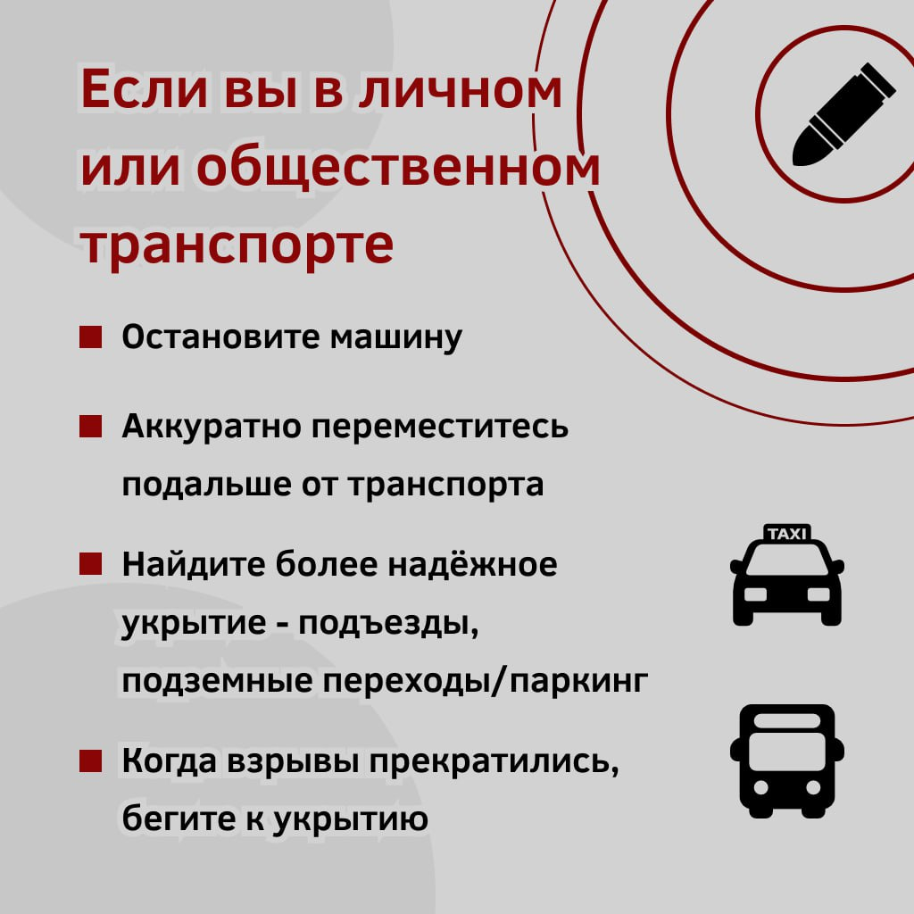
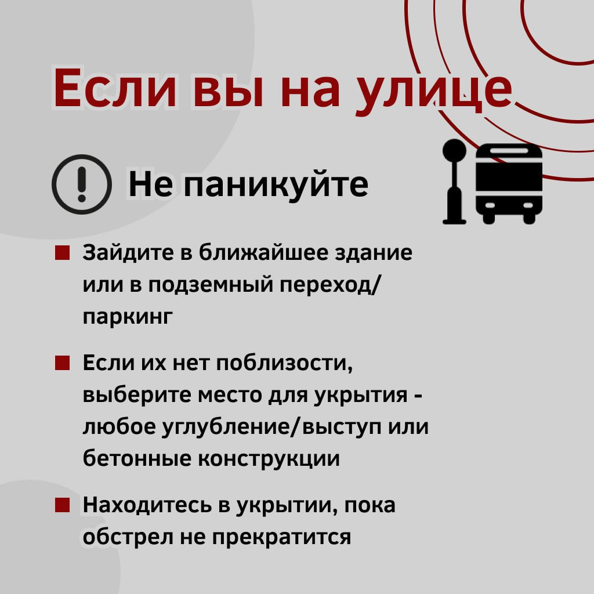
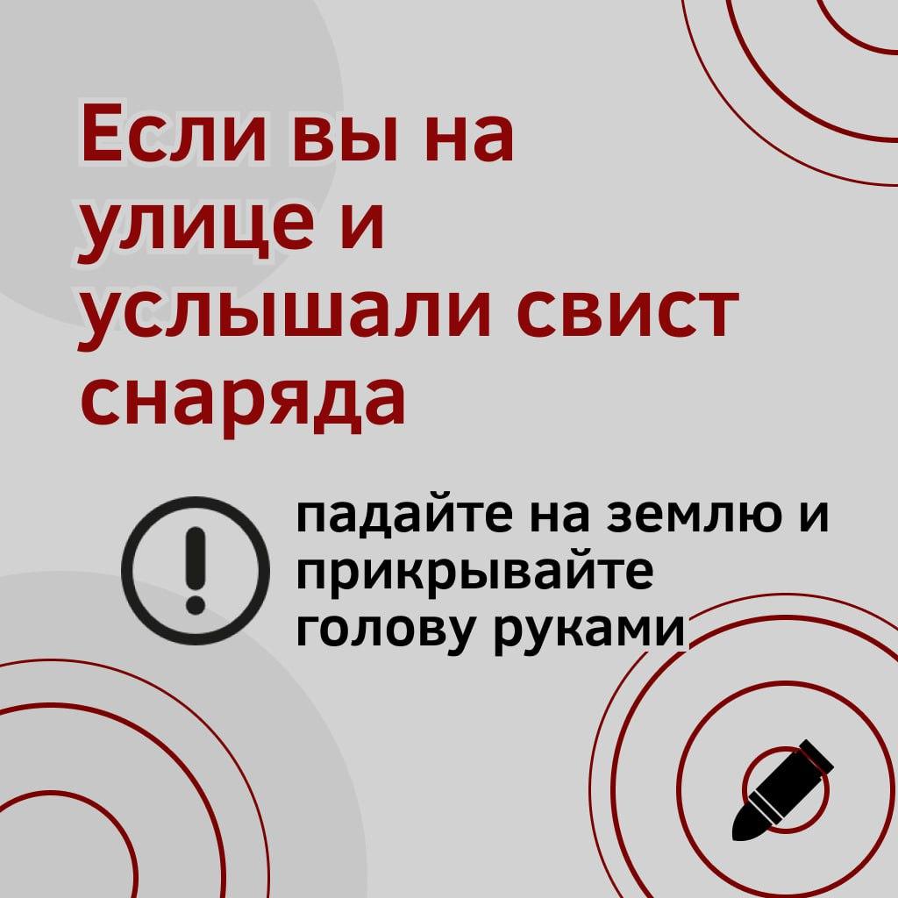
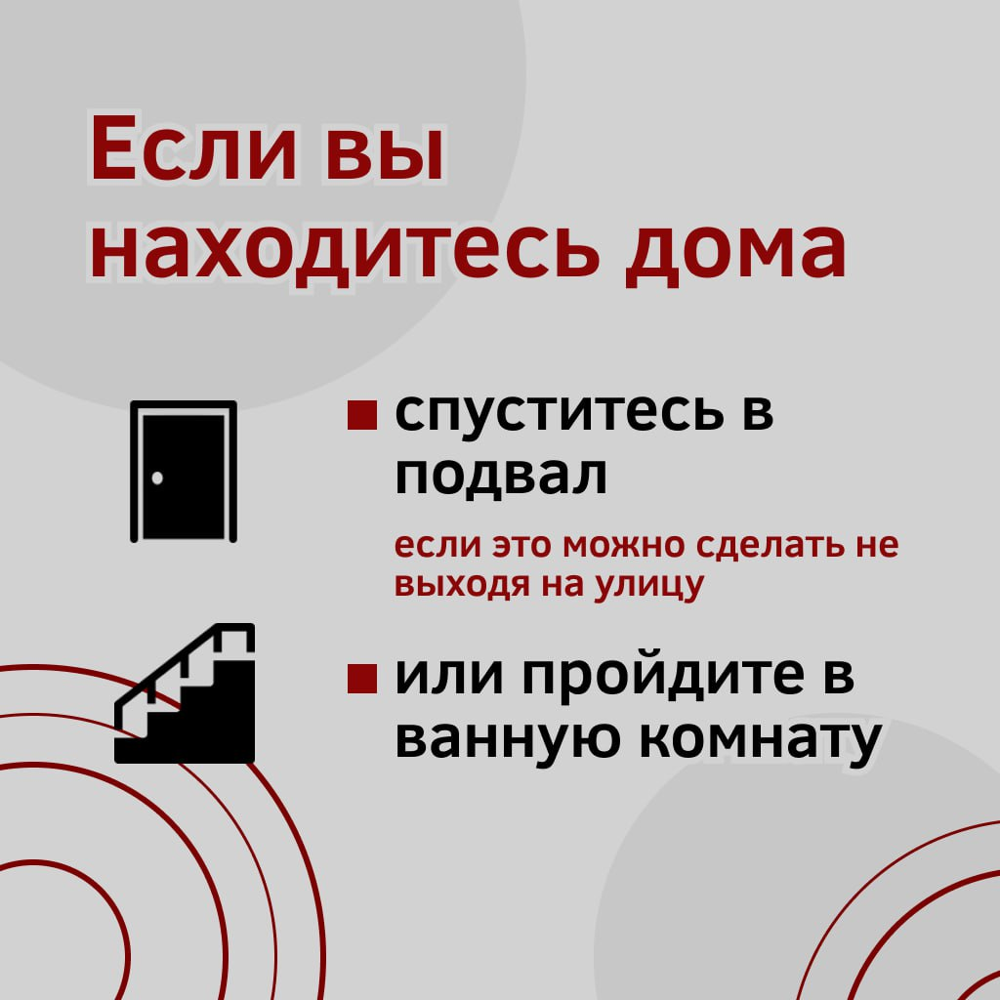
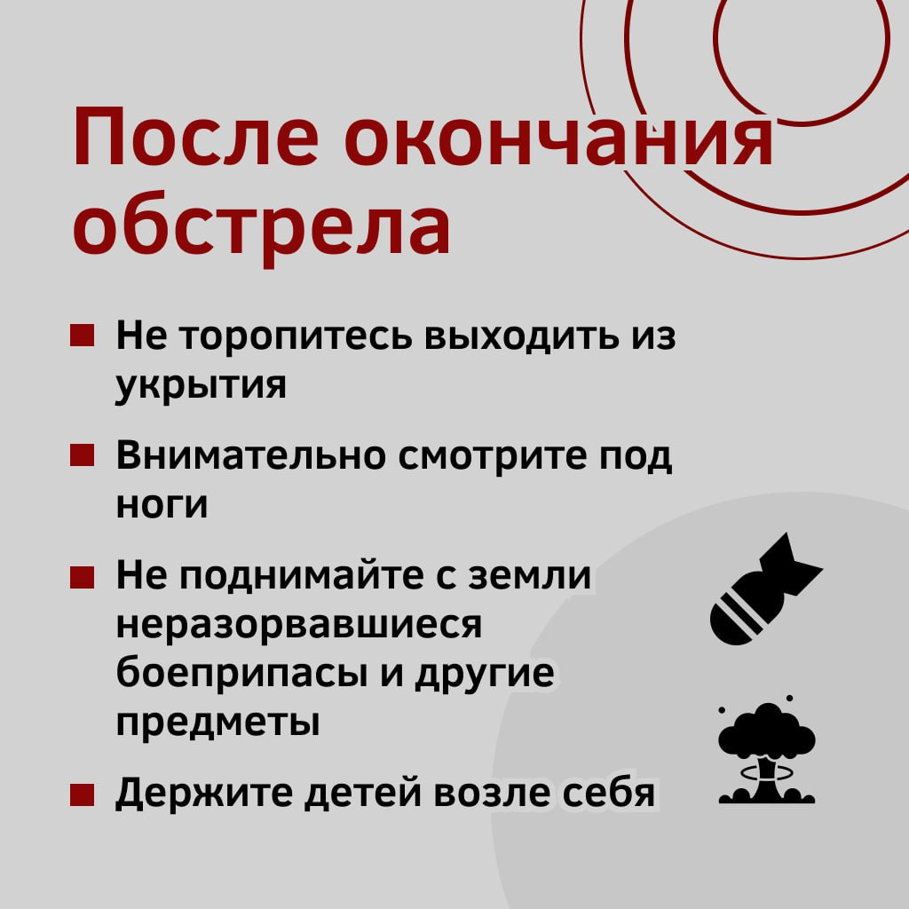

При непосредственной угрозе ракетной и авиационной опасности (в т.ч. с использованием БПЛА), связанной с намерениями противника по поражению населения города с воздуха, для оповещения населения подаётся сигнал гражданской обороны – ракетная опасность.
По данному сигналу населению необходимо:
1) При нахождении в здании:
спуститесь в подвал, на нижний этаж здания, в котором находитесь;
при отсутствии указанных выше укрытий, найдите помещение, комнату без окон (в доме или квартире — можно использовать ванную комнату), либо с несущими стенами, сядьте на пол около такой стены и пригнитесь, избегайте нахождения напротив окон;
в частном домовладении используйте для укрытия погреб;
возьмите с собой личные документы, деньги, средства связи, продукты питания, одежду, аптечку. Для этого, при экстренной эвакуации (укрытии), рекомендуется сформировать «тревожные чемоданчики» (вещевые мешки) для каждого члена семьи.

2) При нахождении на улице услышав звук сирены:
услышав звук летящего боеприпаса (ракеты) и последующего взрыва, необходимо немедленно лечь на землю и накрыть голову руками, такое положение снизит вероятность осколочных ранений;
для укрытия используйте высокие бордюры (бетонные блоки), естественные углубления (ямы, канавы, рвы, овраги и т.д.);
не используйте для укрытия места рядом с техникой, взрыво- и пожароопасными объектами, а также не следует укрываться на расстоянии не менее 30-50 метров от многоэтажных домов, чтобы обезопасить себя от обрушений конструкций дома (балконов, лоджий, декора, железобетонных конструкций).

3) При нахождении дома, необходимо:
перекрыть газ, воду, отключить электричество;
плотно закрыть окна, двери, вентиляционные и другие отверстия;
возьмите с собой личные документы, деньги, «тревожный чемоданчик», который должен быть укомплектован: аптечкой первой помощи и необходимыми для Вас лекарствами, запасом воды и продуктов питания на трое суток; одноразовой посудой, средствами личной гигиены, вещами (нижнее белье, носки, теплая одежда), фонариком с запасом батареек, спичками, газовыми зажигалками, перочинным (универсальным) ножом, нитками, иголкой, ножницами, средствами связи, с зарядными устройствами и сменными элементами питания и т.д.;
взять средства индивидуальной защиты (противогаз, респиратор, средства защиты кожи или приспособленную для защиты кожи одежду, обувь, перчатки);
предупредить соседей, вдруг они не услышали сигнал;
оказать помощь больным, детям, инвалидам, престарелым;
как можно быстрее дойти до защитного сооружения гражданской обороны, а если его нет, использовать сооружения двойного назначения или другие сооружения (подземные переходы, тоннели или коллекторы и другие искусственные укрытия), при отсутствии их используйте естественные укрытия (любую траншею, канаву, овраг, балку, лощину, яму и другие).

4) При нахождении в автомобиле или общественном транспорте:
остановите автомобиль (попросите водителя общественного транспорта остановить его);
покиньте авто (общественный транспорт) в направлении «от взрыва» и действуйте в соответствии с рекомендациями в пункте «б» при нахождении на улице.
При прекращении угрозы ракетной и авиационной опасности подаётся сигнал — «Отбой воздушной тревоги».